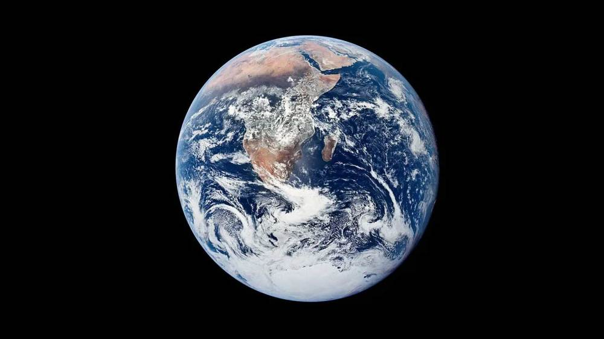

A FIELD GUIDE TO OUR SOLAR SYSTEM
A little closer
to the cosmos.
Eight extraordinary worlds. One shared star.
Step beyond the
familiar and discover our cosmic neighbourhood.

Different worlds.
Endless curiosity.
YOUR NEXT DESTINATION
Meet the neighbours.
From small, rocky worlds to distant ice giants.
Choose a
planet. Get a new perspective.
Showing 8 worlds
No worlds found. Try another name or choose “All worlds”.
Select any planet to open its field notes. Images and planet facts: NASA Science ↗
A DIFFERENT POINT OF VIEW
Everything
is in motion.
Planets travel around the Sun. Take a moment to watch this simplified orbital sketch, or pause it to look a little closer.
An illustration of motion: sizes, distances and orbital speeds are not to scale.
STAY CURIOUS